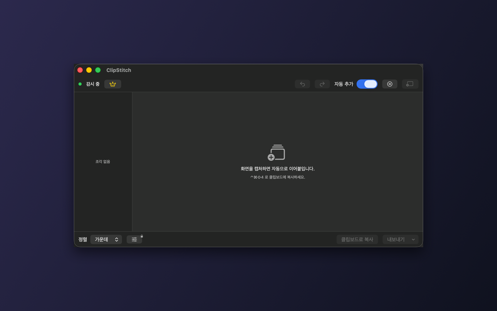
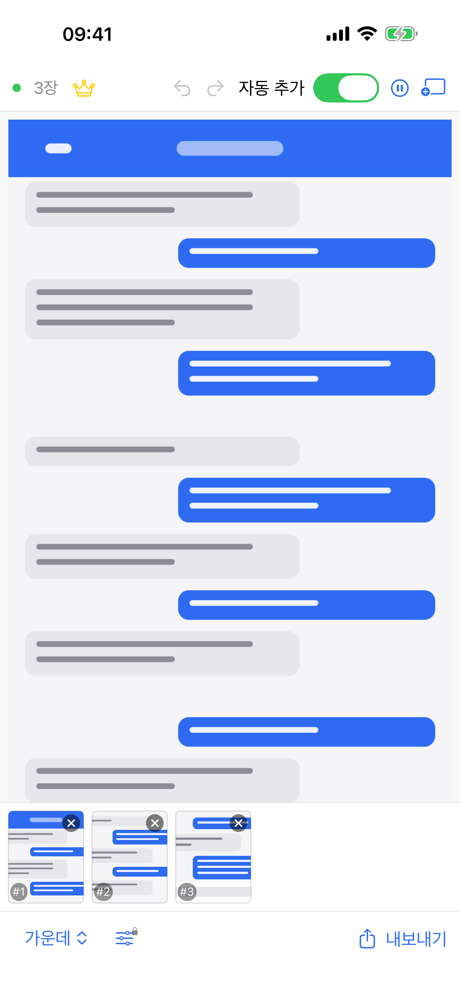
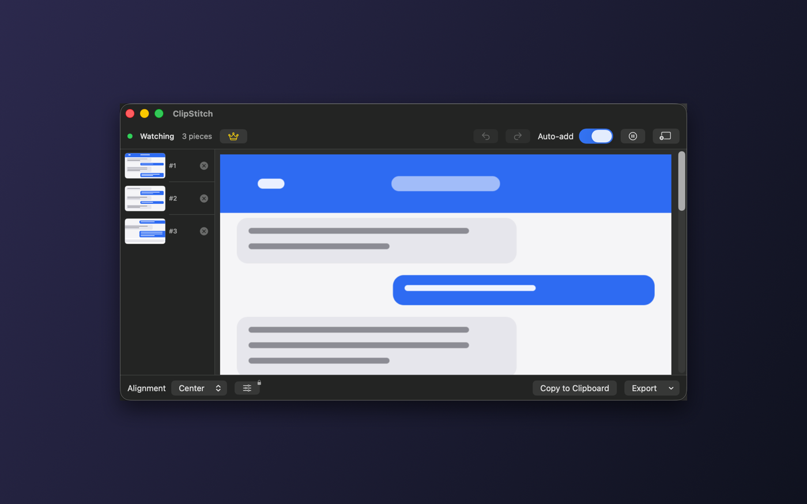
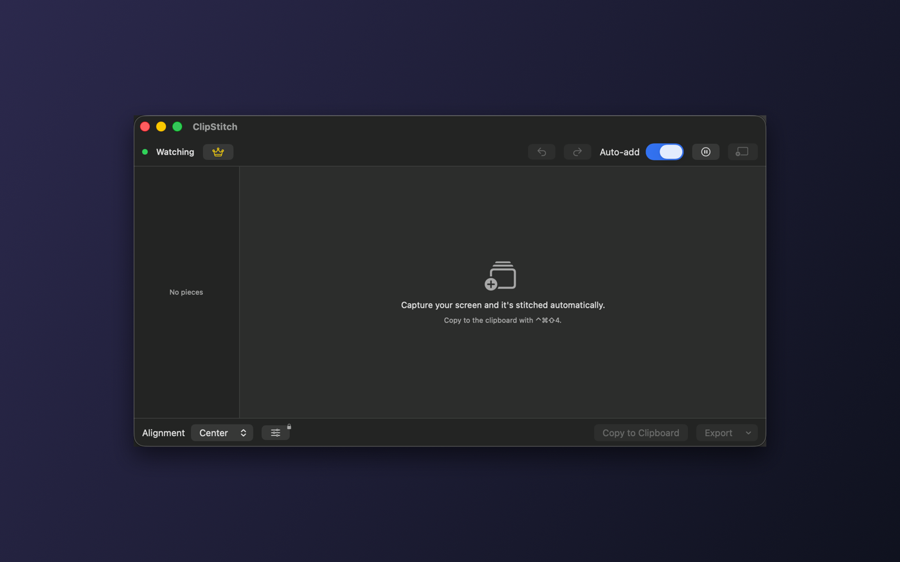
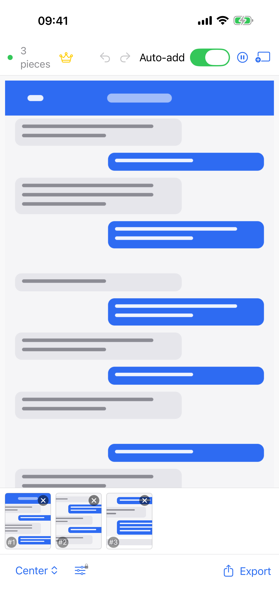
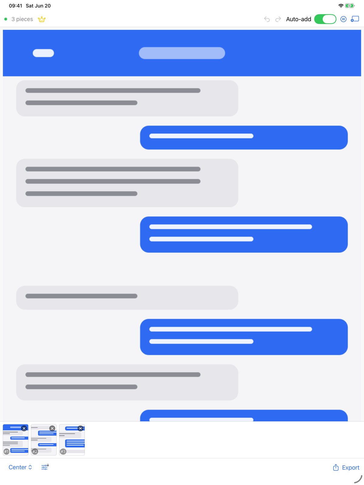

한 화면에 안 들어가는 긴 웹페이지·채팅·문서·코드를 여러 번 캡처하면, ClipStitch가 클립보드를 감시해 하나의 긴 이미지로 자동 이어붙입니다. 앱을 열고 사진을 고를 필요 없이요.
현재 App Store 심사 중입니다 — 승인되면 바로 열립니다.
동작 방식
세 단계가 전부입니다. 캡처한 순서대로 알아서 붙고, 필요하면 썸네일로 순서를 바꾸면 됩니다.
긴 화면을 위에서 아래로 나눠 캡처해 클립보드에 복사합니다. macOS는 ⌃⌘A 단축키 한 번이면 됩니다.
ClipStitch가 클립보드를 감시하다 새 스크린샷을 자동으로 추가하고 하나의 긴 이미지로 이어 붙입니다. 같은 화면이 두 번 들어와도 자동으로 걸러냅니다.
PNG·JPEG·PDF로 저장하거나 클립보드로 복사, 사진 앱에 저장까지. 정렬과 순서는 미리보기에서 바로 확인합니다.
무료 기능
매일 쓰는 데 필요한 기능은 처음부터 다 들어 있습니다.
macOS는 백그라운드에서 감시하고, iOS는 앱으로 돌아오면 새 스크린샷을 감지합니다.
썸네일로 조각을 끌어 순서를 바꾸거나 삭제하고, 결과를 실시간으로 확인합니다.
왼쪽 · 가운데 · 오른쪽 정렬, 또는 가장 넓은 폭에 맞추기를 선택합니다.
같은 스크린샷을 두 번 복사해도 자동으로 걸러내 깔끔하게 유지합니다.
이미 가지고 있는 이미지 파일을 끌어다 놓아 바로 이어붙일 수 있습니다.
어떤 변경이든 되돌리거나 다시 적용할 수 있어 마음 편히 시도합니다.
PNG · JPEG · PDF로 저장하거나 클립보드로 복사, 사진 앱에 저장까지 한 번에.
메뉴바에 상주하며 전역 단축키와 로그인 시 자동 실행을 지원합니다.
모든 기기에서
메뉴바에서 빠르게, 손안에서 자유롭게. 같은 흐름이 어디서나 이어집니다.


필요한 사람을 위한 강력한 기능을 한 번에. 핵심 기능은 계속 무료로 남습니다.
한 번 구매하면 평생 — 구독 아님조각 사이 겹치는 영역을 자동으로 찾아 없애 자연스럽게 이어 붙입니다.
기기 내 OCR로 글자를 인식해 복사하거나 검색 가능한 PDF로 내보냅니다.
공유 전에 민감한 영역을 단색이나 모자이크로 가립니다.
가로 모드, 간격, 배경색, 위·아래 잘라내기까지 자유롭게 조정합니다.
여백·그라데이션·그림자를 더한 스타일 이미지, 멀티페이지 PDF, 드래그 앤 드롭까지.
여러 프로젝트를 저장하고 자유롭게 오가며 작업합니다.
Pro는 한 번 구매하면 그대로 내 것 — 월 결제도, 연 결제도 없습니다. 무료 기능은 앞으로도 무료입니다.
자주 묻는 질문
아닙니다. ClipStitch Pro는 한 번만 구매하면 평생 사용하는 일회성 구매입니다. 정기 결제가 없습니다.
네. 모든 처리가 기기 안에서 이뤄지며 네트워크 코드 자체가 없습니다. 인터넷 없이도 그대로 동작합니다.
클립보드는 기기를 벗어나지 않고 어디에도 전송되지 않습니다. 클립보드는 감시 중일 때만 읽으며, 광고·추적·계정이 없습니다. App Store 개인정보 라벨은 '데이터가 수집되지 않음'입니다.
macOS(메뉴바 앱, 전역 단축키, 로그인 시 자동 실행)와 iOS(iPhone·iPad)에서 모두 사용할 수 있습니다.
개인정보
개인정보 보호는 부가 기능이 아니라 설계 그 자체입니다.
앱에 통신 코드가 전혀 없어 클립보드가 어디로도 전송되지 않습니다.
클립보드는 감시가 켜져 있을 때만 읽고, 그 외에는 손대지 않습니다.
광고도, 추적도, 계정도 없습니다. 그냥 도구입니다.
OCR을 포함한 모든 작업이 기기 안에서 끝납니다.
Long web pages, chat threads, documents, and code that don't fit one screen — capture them in pieces and ClipStitch watches your clipboard and stitches them into one tall image. No opening an app and picking photos.
In review on the App Store — opens once approved.

How it works
Three steps, that's it. Pieces stitch in the order you captured them, and you can reorder with thumbnails any time.
Capture a long screen in pieces, top to bottom, and copy each to the clipboard. On macOS it's one shortcut: ⌃⌘A.
ClipStitch watches the clipboard, adds each new screenshot, and stitches them into one tall image. Copy the same shot twice and the duplicate is filtered out.
Save as PNG, JPEG, or PDF, copy to the clipboard, or save to Photos. Check alignment and order right in the live preview.
Free features
Everything you need for everyday use is here from the start.
macOS watches in the background; iOS detects new screenshots the moment you return.
Drag thumbnails to reorder or delete pieces, and see the result update in real time.
Align left, center, or right — or scale every piece to the widest one.
Copy the same shot twice and ClipStitch filters it out so the stitch stays clean.
Drop in image files you already have and stitch them right alongside your captures.
Undo or redo any change, so you can experiment without worrying.
Save as PNG, JPEG, or PDF, copy to the clipboard, or save to Photos.
Lives in the menu bar with a global shortcut and launch at login.
Every device
Fast from the menu bar, free in your hand. The same flow follows you everywhere.



Powerful tools for when you need them, all in one upgrade. The core features stay free.
One-time purchase, yours forever — not a subscriptionAutomatically detects and removes overlapping areas between pieces for a seamless join.
On-device OCR reads the text so you can copy it or export a searchable PDF.
Hide sensitive areas before sharing with a solid fill or pixelate.
Switch to horizontal mode and adjust spacing, background color, and top/bottom trim.
Styled image with padding, gradient, and shadow, plus multi-page PDF and drag and drop.
Save and switch between multiple projects whenever you like.
Pro is a one-time purchase — no monthly or yearly fees. And the free features stay free, always.
FAQ
No. ClipStitch Pro is a one-time purchase that's yours forever. There are no recurring charges.
Yes. Everything happens on your device — there's no network code at all — so it works exactly the same with no internet.
Your clipboard stays on your device and is never sent anywhere. It's read only while watching, and there are no ads, tracking, or accounts. The App Store privacy label is "Data Not Collected."
macOS (menu-bar app, global shortcut, launch at login) and iOS (iPhone and iPad).
Privacy
Privacy isn't a feature bolted on — it's how ClipStitch is built.
There is no networking code at all, so your clipboard is never sent anywhere.
The clipboard is read only when watching is on, and left alone otherwise.
No ads, no tracking, no account. It's just a tool.
Everything, including OCR, finishes on your device.
Copy and it stitches, export and you're done. The core features are free.
In review on the App Store — opens once approved.